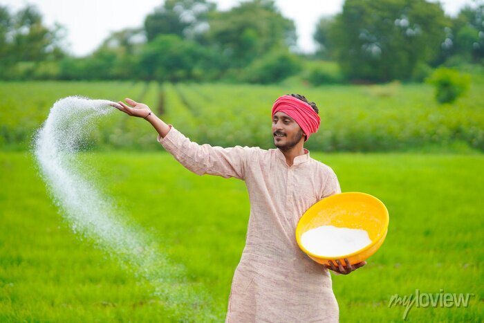

Fertilizers are substances added to soil to provide essential nutrients needed for plant growth. They improve soil fertility and ensure healthier crops, making agriculture more productive and sustainable.
Fertilizers play a vital role in agriculture by enhancing soil fertility and providing essential nutrients that promote plant growth. They help improve crop yields, ensure food security, and support sustainable farming by replenishing depleted soils. Organic and biofertilizers improve soil health and microbial activity, while chemical fertilizers supply specific nutrients for efficient plant development. Their proper use leads to healthier crops, better resistance to pests and diseases, and increased agricultural productivity.
Responsible fertilizer usage is essential to ensure sustainable agriculture and environmental protection. Here’s how farmers and gardeners can use fertilizers wisely: